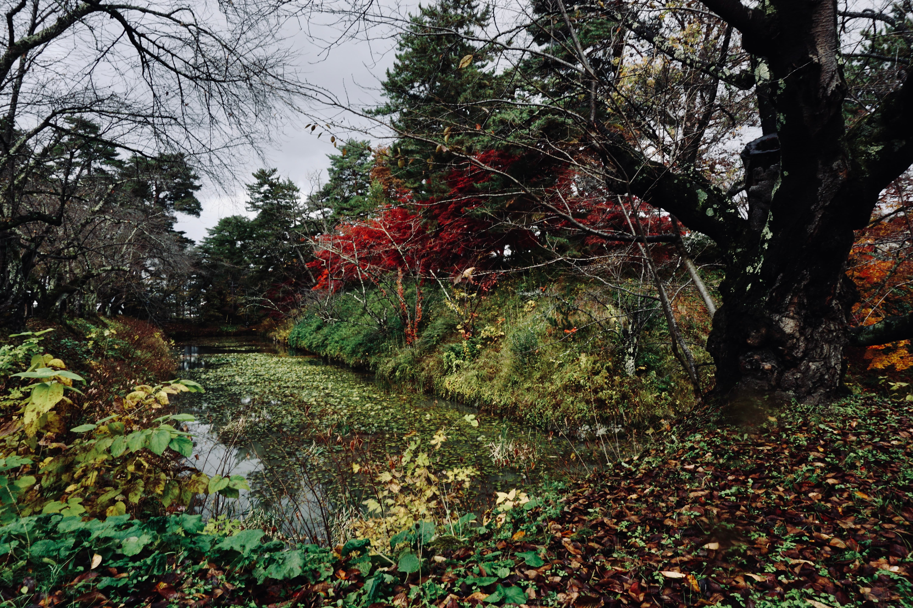

2023年11月16日

旅程最後一天，為了在前往仙台機場前抓緊時間前往弘前城，早晨六點半在小而巧的青森日航都市飯店精美自助式早餐前隨意選了幾樣能快速完食的食物，十分鐘內解決晨間果腹的任務，引來餐廳經理關注的目光，深怕餐點口味不合我們胃口。不得不說這間飯店雖只是三星，但是對於客人是真心的關照到心坎，禮儀周到但又保持著親切。這裡的員工認真想讓每位客人在飯店裡擁有美好回憶的態度令我感到無比溫暖。
告別了飯店，搭乘奧羽本線從青森到弘前，再轉搭Taxi到弘前公園。由於這天必須趕下午的班機，因此能夠停留在這的時間並不長。而來到這之前就有聽聞紅葉已掉的差不多，原本我對這裡的紅葉已不抱太大希望。不過事實證明，弘城公園就算沒有密滿紅葉的加持，它也仍舊有獨特的魅力。所幸最後還是有趕來看幾眼，才能捕捉到美麗的護城河一隅，看它在小小的觀景窗裡，美的像幅畫。
← 回到首頁0 views